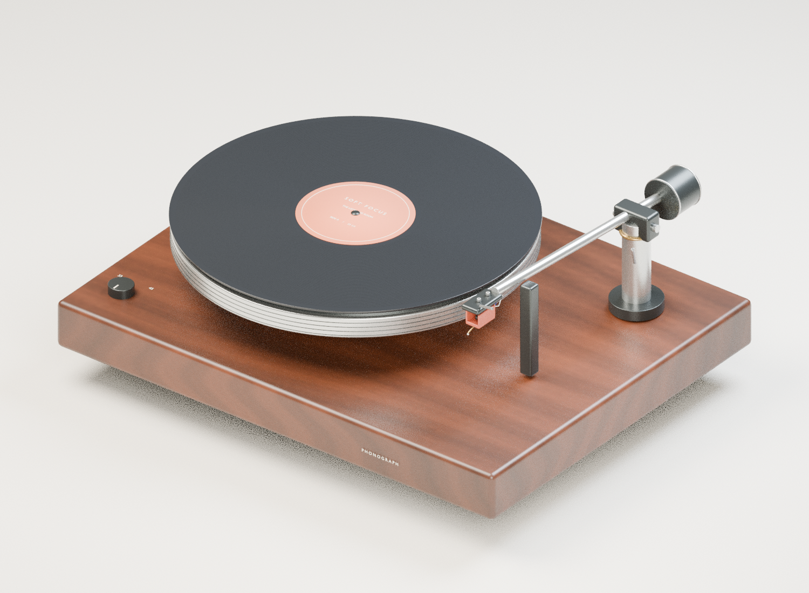

THE MODERN CLASSIC
A little closer
to the music.
A thousand small movements.
One extraordinary sound.
Take a turntable apart and discover
the beauty in how it works.
EXPLORE THE ANATOMY10 PARTS
FIG. 01A belt-drive turntable
Walnut / aluminium / analogue
Walnut / aluminium / analogue
SETTING THE TABLE

The interactive model couldn’t load. You can still explore every part below.
DRAG TO ROTATE · SCROLL TO ZOOM1 : 1 CURIOSITY
THE BEAUTIFUL PART IS WHAT YOU CAN’T SEE
One groove.
An entire orchestra.
A record doesn’t store sound as data. It holds a physical trace of a performance. Follow that tiny movement as it becomes something you can hear.